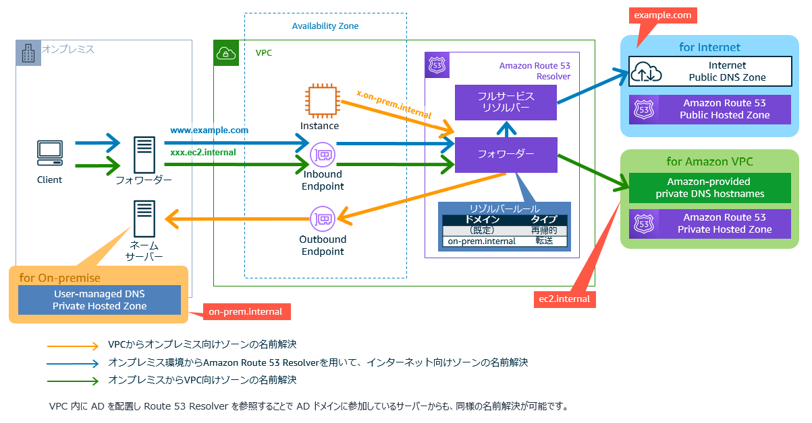
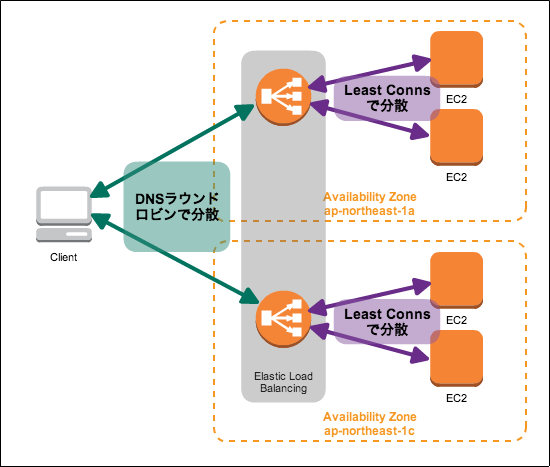
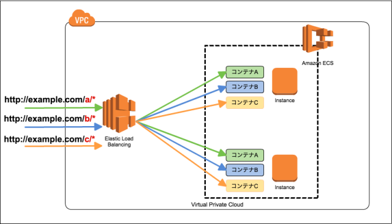
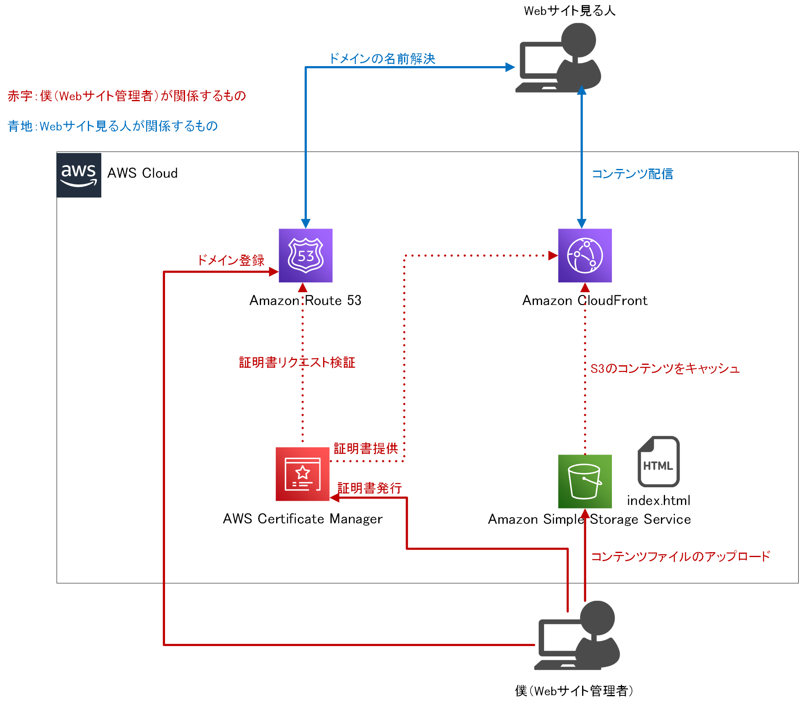

1. AWSのネットワーク¶
1.1. セキュリティグループとネットワークACL¶
以下の説明はよく聞くけどどういうことなのか
セキュリティグループはステートフルで、１つの通信を設定すれば戻り値の設定は不要
ネットワークACLは送受信で個々の設定が必要
1.1.1. ステートフルとは？¶
ステートフルパケットインスペクションの略であり、出入りするパケットの通信状態を把握して、動的に通信の可否を決めるということ
1.1.2. セキュリティグループ¶
サブネットの中で定義することができる。
インバウンドとアウトバウンドを定義することができる。 ただし、ステートフルなので、インバウンドで許可したものは自動でアウトバウンドで許可される
インバウンドでport22を許可
アウトバウンドですべて拒否
port22でアクセスすると成功する（自動的にアウトバウンドが許可される）
1.1.3. ネットワークACL¶
サブネットに紐づけて定義をする。EC2などのインスタンスに設定することができる。
ステートレスなので、インバウンドもアウトバウンドも明示的にルール設定する
インパウンドでport22を許可
アウトバウンドはEphemeralポートの49152 – 65535を許可
これで初めてsshが成功する。
1.2. AWSとの通信¶
AWSとの通信には、ネットワークを通じた通信と専用回線による通信がある。 さらに、ネットワークを通じた通信は「HTTPS/SSH」と「VPN」がある。
ネットワークを通じた通信
HTTPS/SSH
VPN
専用回線
1.2.1. Direct Connect¶
専用回線による通信のソリューション キャリアから調達した専用線の片端とAWS をDirect Connctionロケーションで接続するサービスを指す。
1.3. Route53¶
AWSのDNS(Domain Name System)サービス。
VPCで構築したリソースに、特定多数のユーザーをアクセスさせるためには、Route53を利用する。
1.3.1. DNSの基本¶
1.3.1.1. DNSの種類¶
DNSサーバーには基本的に以下の２種類が存在する。
権威DNSサーバー
権威DNSサーバーとは、DNS Resolverから問い合わせに応じて、自身が管理するのゾーン情報を返却する。DNS Resolver
DNS Resolverとは、フルサービスリゾルバや再起リゾルバと呼ばれ、複数のサーバーに問い合わせして、名前解決をしていき最終的な結果をけえす
1.3.1.2. DNSの動き¶
DNSはグローバルIPアドレスとドメインを紐づける役割を持っている
具体的なDNSの動きを以下の図を見ながら確認する
ブラウザでドメインを記入して検索
リクエストが
DNS ResolverにルーティングされるDNS Resolverから
DNS root name serverに転送され、.comドメインを管理するサーバーの情報がレスポンスされるDNS ResolverからNameサーバーへ問い合わせが繰り返される

1.3.2. Route53の機能¶
Route53では、ホストゾーンを設定することで、権威DNSサーバーを設定することができる。
DNS Resolverの働きはVPCを作成すると自動で構築されるRoute53 Resolverが行う。 オンプレへのルーティングなどを設定するに利用する。
1.3.3. ホストゾーン¶
各権威DNSサーバーが保持する範囲
Route53ではゾーンの範囲によって種類が２つ存在する。
パブリックホストゾーン
インターネットでのルーティングを指定するプライベートホストゾーン
VPC内でのルーティングを指定する
以下の形式で接続先や権限移譲先のサーバーを保持している
ドメイン名 TTL CLASS TYPE RDATA
ドメイン名：自分が管理しているドメイン名
TTL：レコードが有効な期限
CLASS：ネットワークプロトコルを示し、基本的にインターネットINになる
TYPE：
レコードのタイプRDATA：レコードの実際の値

1.3.3.1. レコードタイプ¶
SOA：Start Of Authority：ドメインやゾーンの基本情報
NS：ゾーンを管理するネームサーバーのドメイン名。親子で同じNSコードを登録しておく
A：ドメインに対応するIPv4アドレス Route53の拡張レコードとして、ELBやCloufFront、S3といったAWSリソースにトラフィックをルーティングするエイリアスレコードを設定することができる。
AAA：ドメインに対応するIPv6アドレス
CNAME：ドメイン名の別名
MX：対象ドメイン宛のメール転送先
1.3.3.2. トラフィックルーティング¶
いくつかのオプションが準備されている。
シンプルルーティング：紐づいたアドレスを返す
位置情報ルーティング：クライアントのIPアドレスから位置情報を特定して、ルーティング（近いとか関係なくルーティング）
フェイルオーバールーティング：ヘルスチェックと合わせて、待機システムへの切り替えが可能
地理的近接性ルーティング：クライアントとサーバーの距離に基づいてルーティング（レイテンシが低いとは限らない）
レイテンシーベースルーティング：レイテンシーが短くなるように
加重ルーティング：特定の割合に基づいて
複数回答ルーティング：ランダムに選択されたアドレスを返す
1.3.4. Route53 Resolver¶
VPCを構築した時に同時に作成される。 Route53 Resolverでは、フルサービスリゾルバとDNSフォワーダの機能を持っている。 フルサービスリゾルバの機能は上述した通り、各種ネームサーバーに対する再起的な問い合わせを行う。
1.3.4.1. オンプレとの接続¶
オンプレとのルーティングを設定する場合は、Route53でアウトバンドエンドポイントを設定し、以下を設定する必要がある。
アクセス元とVPCおよびセキュリティグループ
オンプレ側のドメイン名
オンプレ側のDNSサーバーのIPとポート

1.3.4.2. DNSフォワーダ¶
企業内のネットワークなどを考えると、フルサービスリゾルバにさまざまなドメインの問い合わせが集中して負荷が大きくなる。 要求を振り分けるDNSフォワーダによりこの問題を解決する。 フォワーダは特定ドメインの名前解決要求に対して、ネームサーバーや別のDNSサーバーに集中するるルールを設定することができる。
1.4. ELB(Elastic Load Balancer)¶
AWSが提供する完全マネージドな仮装ロードバランシングサービス。 複数のWebサーバーやアプリケーションに対してリクエスト要求の負荷を分散させることができる。 複数のAZを跨いで構築することができ、VPC内に仮想的に配置される。 あたかも１つのリソースのように見えるが、内部的には冗長化されており、スケールアウトやスケールインを自動で行ってくれている。

1.4.1. ELBの共通機能¶
1.4.1.1. ヘルスチェック¶
ターゲット（EC2やコンテナやLambda）に対して、リクエストを送信して、死活監視をおこなっている、 リクエストに関してはタイムアウト時間や閾値を設定可能で、CloudWatchでモニタリングも可能
1.4.1.2. SSL/TLSターミネーション¶
『クライアント→ELB→インスタンス』の通信において、SSL/LSTを利用した暗号化が可能で暗号化する範囲や誰が暗号化するかも設定可能
以下のパターンが代表的
クライアント→ELB間を暗号化(ELBでターミネーション)
クライアント→ELB→インスタンス間の通信を暗号化（ELBでターミネーション＋通信の暗号化）
パススルー型（EC2側でターミネーション。クライアントで証明書が必要な場合に採用）これはNLBで実装できる。
1.4.1.3. Connection Drain¶
LBが終了する際に、リクエストが残らないように処理終了までの遅延時間を設定可能
1.4.1.4. スティッキーセッション¶
同じクライアントからのリクエストに常に同じターゲットに振り分けるような利用する。 買い物かご機能を実現するために利用される。 リクエストの振り分け識別子にはELBによって生成されたCookieが利用される。
1.4.2. ALB(Application Load Balancer)¶
OIS参照モデルの第７層(アプリケーション層)レベルでルーティングを行う。 「リスナー」と呼ばれるコンポーネントを作成し、使用するプロトコルとポートを設定して、ルーティングルールを設定する。

1.4.2.1. ルーティング¶
複数のルーティングが提供されている。
パスルーティング
リクエストのパスに従ってルーティングホストベースルーティング
HTTPヘッダのドメインに基づいてルーティング
一つののLBで異なるドメインのアプリケーションを振り分ける時に利用HTTPヘッダーベースルーティング
HTTPヘッダの値に応じてルーティングHTTPメソッドルーティング
HTTPのメソッドに応じてルーティングクエリ文字列ベースルーティング
HTTPのクエリパラメータに応じてルーティングソースIPアドレスCIDRベースルーティング
リクエスト元のIPアドレスに応じてルーティング
1.4.2.2. 認証認可¶
CognitoやOIDCのID プロバイダと連携してユーザー認証をサポート。 認証が成功すると、ALBがアクセストークンやIDトークンをHTTPヘッダーに付与してリクエストを転送してくれる。
1.4.2.3. 他のサービスとの連携¶
EC2/ECS/Lambda
トラフィックのルーティング先として、設定できるRoute53
エイリアスコードを利用して、ドメイン名とロードバランサーの紐付けを行えるCertificate Manager
ALBで使用するSSL証明書の発行・設定を行うAWS WAF
Web ACLのルールに基づいて、リクエストを許可やブロックできるAWS Global Accelerator
ALBにアクセスするGlobal Acceleratorを配置して、複数のリージョンにトラフィックを分散できる
1.4.3. NLB(Network Load Balancer)¶
OIS参照モデルの第4層(トランスポート層)レベルでルーティングを行う。
IPアドレスとポートを元に振り分けを行うので、低負荷で負荷分散が可能である。
1.4.4. CLB(Classic Load Balancer)¶
かつてはL4やL7のロードバランサー機能を提供していたが、現在はALBやNLBを利用するため、メンテナンスモードに近い位置付け。
1.4.5. GLB(Gateway Load Balancer)¶
2020年11月に発表された4番目のLB。 ただし、ALBやNLBとは異なった利用方法をする。 具体的にはGWで受け付けたネットワークを別VPCに転送して、不正な攻撃が含まれていないか検出する。
GLBでは、IGWや仮想プライベートゲートウェイにおける送受信ネットワークトラフィックを別のVPCに中継し、 サードパーティ製のセキュリティミドルウェアがインストールされたEC2インスタンスへ転送するため。
1.5. Cloud Front¶
CloudFrontはCDN（Contents Delivery Netwoerk)の機能を持つマネージドサービス。 CloudFrontを利用することで、クライアントへコンテンツを高速配信することが可能。
AWSは、エッジロケーションを世界中に保有しているため、グローバル単位でコンテンツ配信を高速化可能であり、 さらに他のAWSサービスと統合されているため、アクセスのモニタリングやセキュリティの担保が可能となる。
1.5.1. CDNとは¶
各地に配置されたエッジサーバーにコンテンツをキャッシュすることによって、コンテンツ配信の高速化や負荷分散する処理。
オリジンサーバーとエッジサーバーで構成されている
オリジンサーバー
コンテンツを配信するWebサーバー・APサーバーエッジサーバー
オリジンサーバーのコンテンツの一部を一時的に保持するサーバー
1.5.2. Cloud Frontの構成要素¶
ディストリビューション
設定するドメインごとに割り当てられるCloudFrontの設定。 ディストリビューションを作成することで、エッジサーバーを指し示す「xxxx.cloudfront.net」が払い出される。オリジン
オリジンサーバーとの接続を設定することが可能。オリジンにはAWSのS3やALBのサービスを指定することも可能ビヘイビア
エッジサーバーの振る舞いに関する設定が可能。 キャッシングルールなどを設定することができる。
1.5.3. ビヘイビアにおけるキャッシュの設定¶
URLが一致した場合などにキャッシュを利用するように設定できるが、そのキャッシュをどう扱うかをキャッシュコントロールで設定することができる。 CloudFront側で、TTLを設定することができ、オリジン側もCacheControlを設定でき、比較してキャッシュの時間を決定する。
CloudFront側では以下を設定
Max-TTL：最大のTTLでこれは越えれない
Min-TTL：最小でも確保するTTLでこれより小さくはできない
Default-TTL：オリジン側のCache Controlがない場合のTTL
オリジン側では以下を設定
Cache Control：オリジン側からリクエストするTTL
1.5.4. キャッシュポリシーとオリジンリクエストポリシー¶
キャッシングルールをパスごとに１つづつ設定指定が、ポリシー化してアタッチすることが可能となった。
さらに、キャッシュポリシーとオリジンリクエストポリシーを分離して扱うことが可能となっった。 キャッシュポリシーに指定したパラメータはオリジンリクエストに時効的に含まれる。
1.5.5. Lambda@Edge¶
CloudFrontのエッジがわで動作するLambda関数を設定することが可能。 ４つのパターンでLambda関数を定義可能
ビューワーリクエスト
ビューワーからCloudFrontへのリクエストを受信した時に実行する
認証トークンの検証やA/Bテスト用のURLの書き換えなどオリジンリクエスト
CloudFrontからオリジンへの転送時に実行される
S3バケットのURLをエッジに近いものに変えたりするオリジンレスポインス
オリジンからのレスポンスをCloudFrontが受信した時に実行される レスポインスに含まれる画像イメージをリサイズしたりするビューワーレスポンス
CloudFrontがビューワーにレスポンスを返す前に実行される
1.5.6. 他のAWSサービスとの連携¶
CloudWatchにより、キャッシュのヒット率やエラー状況などのモニタリングが可能
アクセスログをS3に配信したり、WAFやACMによってCloudFrontと通信を保護することも可能
